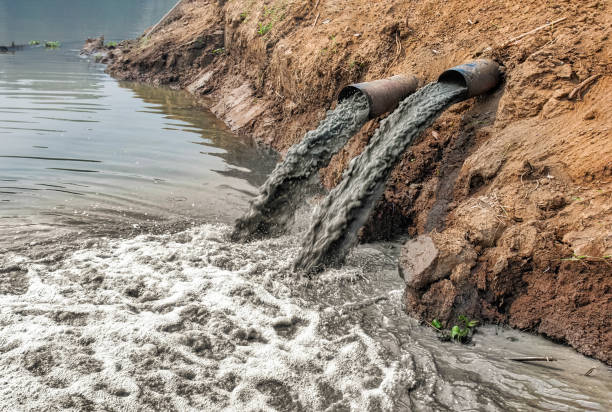
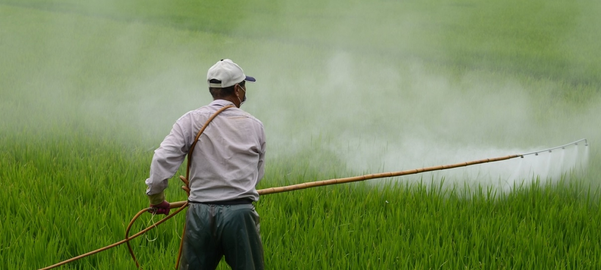
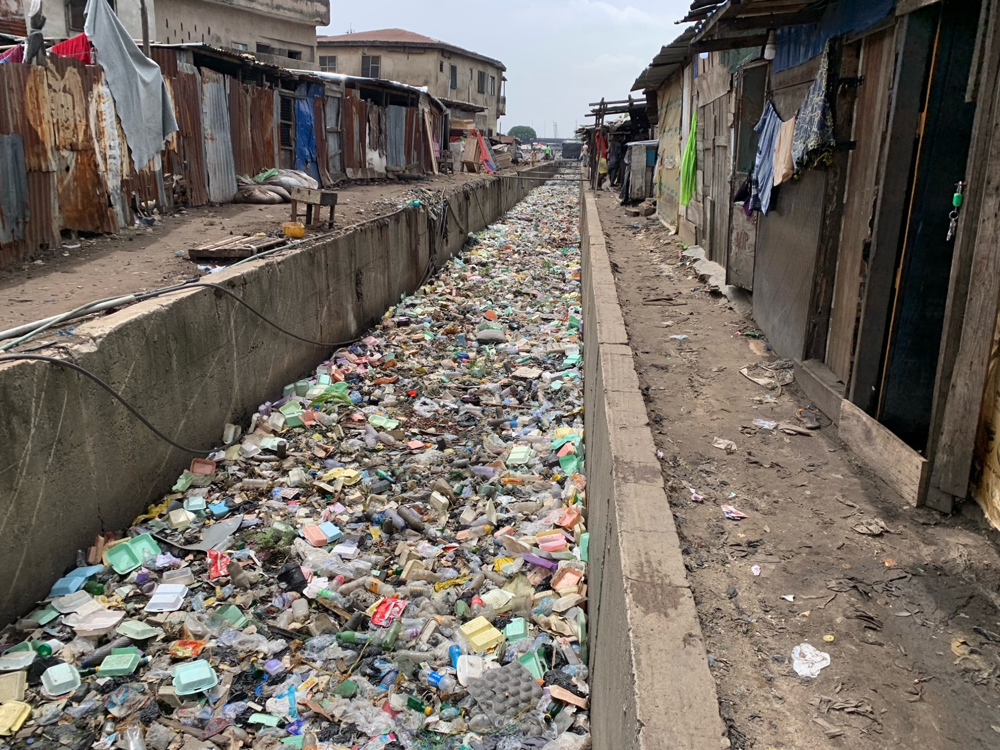
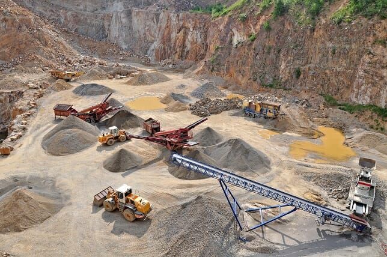
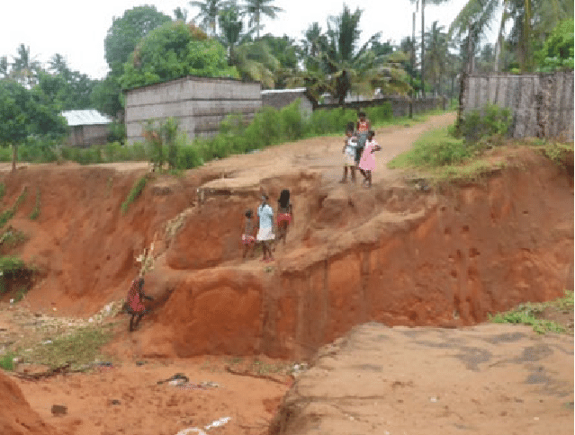

SOIL POLLUSION
Soil Pollution: The presence of toxic chemicals, pollutants, or contaminants in
the soil at levels that pose a risk to health and the environment.
Causes of soil pollution

-
Dumping or accidental spills of chemicals and heavy metals from factories.

-
Excessive use of pesticides, herbicides, and fertilizers.

-
Disposal of household waste, plastics, and non-biodegradable materials.

-
Release of harmful substances during the extraction of minerals.

-
Construction activities and improper sewage disposal.
Effect of soil pollution
-
On Plants: Reduced growth, poor crop yields, and accumulation of toxins in edible parts.
-
On Animals: Health issues from eating contaminated plants or drinking polluted water.
-
On Humans: Health problems from direct contact with polluted soil or through the food chain, including skin irritations, respiratory issues, and long-term diseases like cancer.
-
On the Environment: Disruption of ecosystems, loss of soil fertility, and contamination of water sources through runoff.
prevention of soil pollution
-
Reduce Chemical Use: Limit the use of pesticides and fertilizers; adopt organic farming practices.
-
Proper Waste Management: Dispose of industrial and household waste safely.
-
Soil Testing: Regular testing to monitor soil health and contamination levels.
-
Cleanup Activities: Use of methods like bioremediation (using plants and microorganisms to clean the soil) to remove pollutants.
GROUND WATER POLLUTIION
what is ground water pollution
Groundwater pollution can be define as a pollution that occurs when harmful substances contaminate the water
stored in underground aquifers, making it
unsafe for drinking, irrigation, and other uses.
Causes of ground water pollution
-
Harmful chemicals can seep into the ground and pollute water.
-
Pesticides and fertilizers can drain into the groundwater.
-
Faulty waste disposal systems can release waste into the soil.
-
Leaking tanks of harmful substances contaminate groundwater.
-
Chemicals and metals from mining can pollute water sources.
-
Pollutants from urban areas flow into groundwater with rainwater.
-
Leaking waste from disposal sites can contaminate the soil and water.
Effect of ground water pollution
-
Human Health: Contaminated groundwater can cause various
health issues, including gastrointestinal diseases, reproductive problems, and neurological disorders.
-
Ecosystems: Polluted groundwater can harm plants and animals that depend on clean water sources.
-
Water Supply: Contaminated groundwater reduces the availability of safe drinking water, affecting communities and agricultural activities.
Prevention and Remediation for ground water pollution
-
Proper Waste Disposal: Ensuring safe disposal of industrial, agricultural, and household waste.
-
Regulation and Monitoring: Implementing regulations to control the discharge of pollutants and regularly monitoring groundwater quality.
-
Sustainable Practices: Using environmentally friendly agricultural practices and reducing the use of harmful chemicals.
-
Cleanup Efforts: Techniques like pump-and-treat, bioremediation, and natural attenuation can help clean contaminated groundwater.